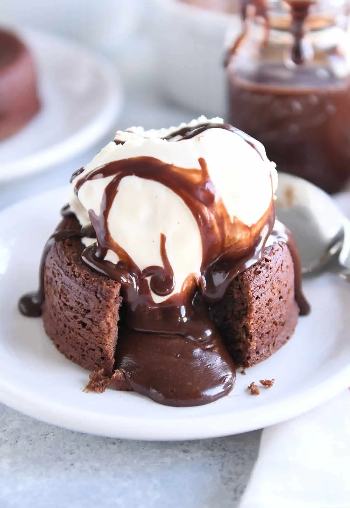

Best place to find easy recipes
The majority of us love to cook or at least try to cook some food, perhaps daily or on special occasions. We do keep recipes, some in the papers, some have organized books, some scribbled it on a convenient place like kitchen boards, some just permanently place them on their brains.
Cooking is an art, food gratifies the audience when we cook with a secret ingredient called “Love”.
I have not learned cooking, but loves to cook for my family. Like someone said, “I am an accidental home cook”.Picked up the skill gradually when I generate some interest in cooking. The level of satisfaction I get from cooking is unexplainable, especially when my family enjoys them with a big wide smile on their face.
Here are few of the receipes which i wanted you to explore, cook and indulge.

-
Lasagna, pasta dish of Italian origin, made with broad often ruffled noodles and a tomato or white sauce.
- Lasagna is considered one of the oldest pasta dishes in Italian cuisine, attested to in medieval literature soon after Marco Polo returned from his travels in Asia. Polo himself recounts eating a dish in China that he called lasagne, noting that the flour used for the noodles was from breadfruit.
- Please click on the link for the detailed recipe.

- A chocolate lava cake or simply lava cake is known for most like all other cakes, what makes it stand apart is the “molten” core where it gets the moniker of lava cake from. This cake is quick to make with only few steps that need to be done perfectly.
- Detailed recipe is given in the link.
- Shahi Tukda is type of bread pudding which originated in South Asia during the Mughal era in the 1600s.The literal translation of Shahi Tukra is royal piece or bite.
- Shahi Tukda originated in the Mughal Empire when Indian chefs made this dish to present to royal Mughal courts.
- You can try out this simple dessert. Please click on the link for the detailed recipe.